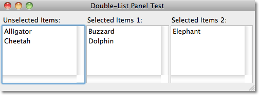

List Panels with Drag
CAPIは、アプリケーション用にdouble-list-panelを提供しており、listのサブセットを選択する必要があります。例えば、あるシンボルを検索したいパッケージを選択する場合や、あるグループに追加されるユーザを選択したりする場合です。
LispWorks バージョン6から、list-panelにドラッグ&ドロップの機能が追加されました。このアプリケーションでは、list-paneと同等の機能をもつドラッグ&ドロップが可能なdouble-list-panelを作ります。
例
例えば、次のように生成したとします:
(make-chooser '("Alligator" "Buzzard" "Cheetah" "Dolphin" "Elephant"))
そうすると、>>> や <<< を使わずに、互いのリストに、ドラッグ&ドロップでアイテムを移動できます:

定義
まず、list-panelからクラスを作ります。ドラッグ&ドロップを検知するために、:drag-callback と :drop-callbackのコールバック関数を追加します:
(defclass drag-list (capi:list-panel) () (:default-initargs :drag-callback #'drag-callback :drop-callback #'drop-callback :interaction :extended-selection))
次は、interfaceを作るルーチンの定義です:
(defun make-chooser (items)
(let* ((deselected-items-pane (make-instance 'drag-list :title "Unselected Items:" :items items))
(selected-items-pane (make-instance 'drag-list :title "Selected Items:"))
(select-button
(make-instance 'capi:push-button :text ">>>" :callback-type :none
:callback #'(lambda ()
(move-items (capi:choice-selected-items deselected-items-pane)
deselected-items-pane selected-items-pane))))
(deselect-button
(make-instance 'capi:push-button :text "<<<" :callback-type :none
:callback #'(lambda ()
(move-items (capi:choice-selected-items selected-items-pane)
selected-items-pane deselected-items-pane))))
(button-layout
(make-instance 'capi:column-layout :description (list select-button deselect-button)))
(layout
(make-instance 'capi:row-layout :adjust :center
:description (list deselected-items-pane button-layout selected-items-pane) ))
(window
(make-instance 'capi:interface :title "Double-List Panel Test"
:best-width 500 :best-height 300 :layout layout)))
(capi:display window)))
このリストパネルは、パネル間でのドラッグ&ドロップを検知するために、 :drag-callbackと:drop-callbackのコールバック関数をもちます。
ドラッグのコールバック関数
ドラッグのコールバック関数は、paneを含んだリストを作り、collectionアイテムんが後に続き、それに:lispの型を与えます:
(defun drag-callback (pane indices) (list :lisp (cons pane (map 'list #'(lambda (i) (elt (capi:collection-items pane) i)) indices))))
ドロップのコールバック関数
ドロップのコールバック関数は３つの段階があります:
:formatsの段階では、どのフォーマットがドロップのターゲットに受け取られるかを特定します。この場合は、:lispフォーマットだけです。
:dragの段階では、他のpaneからドラッグがあったときに、ドロップのターゲットをハイライトします。LispWorksのドラッグ&ドロップは、次のようにハイライトをきかせることができます:
- 個別のアイテム（例: ドロップがアイテムを置きかえるようなアプリケーション）
- アイテム間gaps（例：ドロップが特定の位置にアイテムを挿入するようなアプリケーション）
- 全体のpanel（ドロップの場所が関連性のないクラス）
このアプリケーションではm、ドロップの位置には配慮しません。
オブジェクトのcapi:drop-object-collection-indexは、-1 :itemの値に設定されます。
:dropの段階では、ドロップがされたときにアイテムを受けとります。
(defmethod drop-callback (pane drop-object stage)
(case stage
(:formats
(capi:set-drop-object-supported-formats drop-object (list :lisp)))
(:drag
(when (and
(capi:drop-object-provides-format drop-object :lisp)
(capi:drop-object-allows-drop-effect-p drop-object :move)
;; Don't allow drop on self
(not (eq pane (car (capi:drop-object-get-object drop-object pane :lisp)))))
;; Ignore drop position
(setf (capi:drop-object-collection-index drop-object)
(values -1 :item))
(setf (capi:drop-object-drop-effect drop-object) :move)))
(:drop
(when (and
(capi:drop-object-provides-format drop-object :lisp)
(capi:drop-object-allows-drop-effect-p drop-object :move))
(let ((drag (capi:drop-object-get-object drop-object pane :lisp)))
(move-items (cdr drag) (car drag) pane)
(setf (capi:drop-object-drop-effect drop-object) :copy))))))
ボタンとドロップの動作は move-itemsを使い、実際に２つのリストの間を移動できるようにします:
(defun move-items (items from to) (capi:remove-items from items) (capi:append-items to items))
さらに進んだアプリケーション
この例は、3つ以上のリストパネルがあるwindowにも応用できます。drag-listのインスタンスを追加することで、互いのパネルの間でアイテムをドラッグできます:

例えば、アプリケーションでは、複数のグループ間のユーザを割り当てることも可能です。これは、ボタンだけで実装するのはとても難しいです。
制限
この例では、以下のようなCAPIにビルドインのdouble-list-panelでの凝った機能は実装していません:
- 適切なパネルでアイテムが1つも選ばれなかったときに、ボタンを無効化する機能
- Returnキーの利用
- アイテムの並び替え